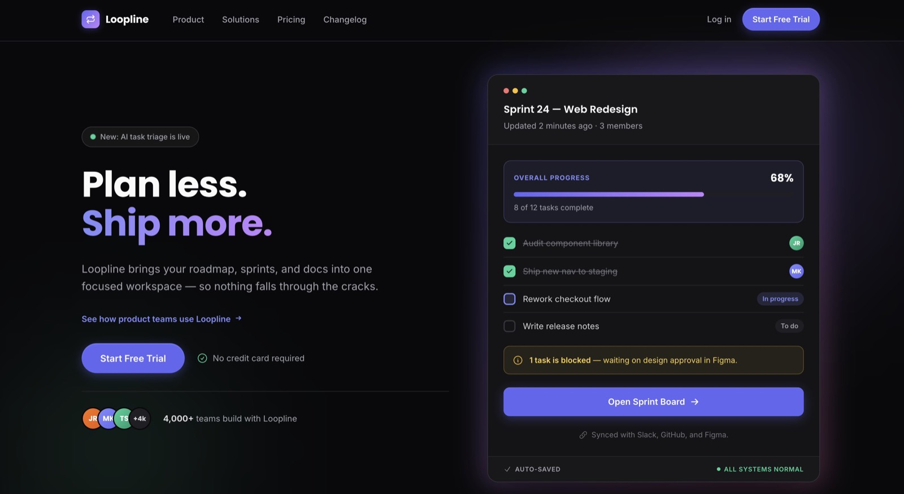
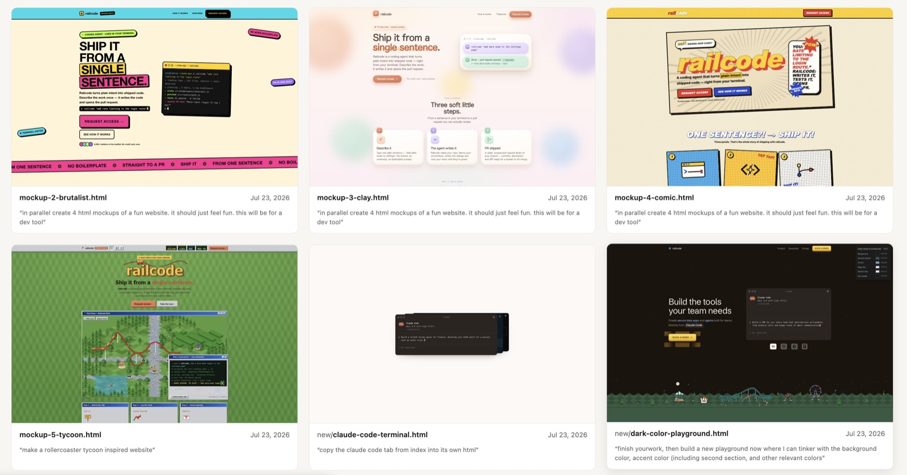
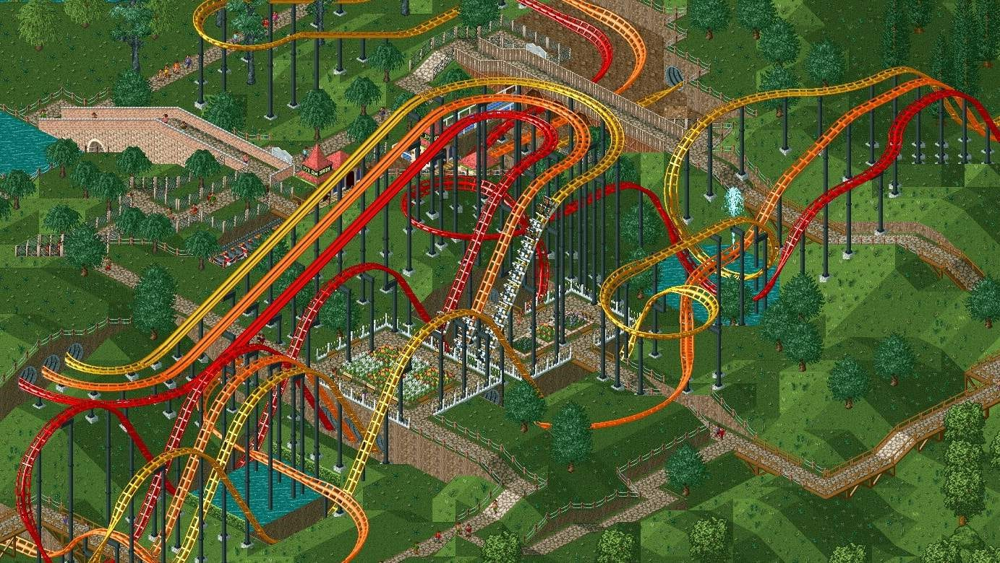
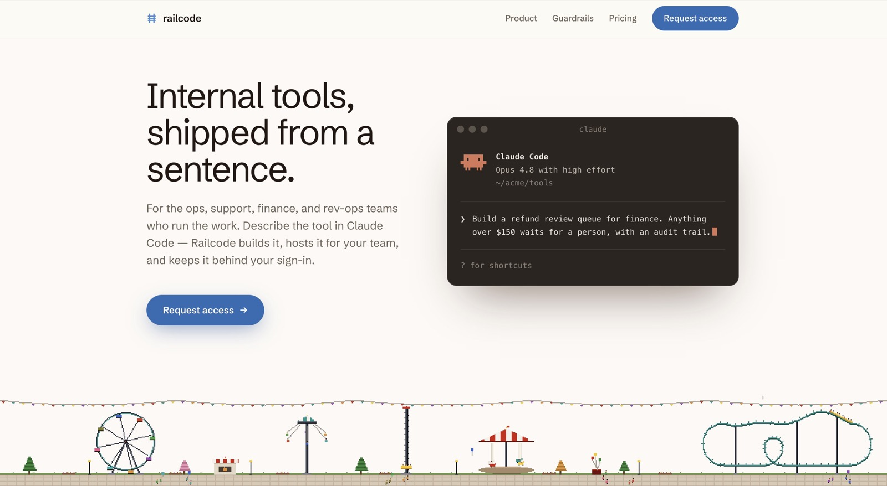
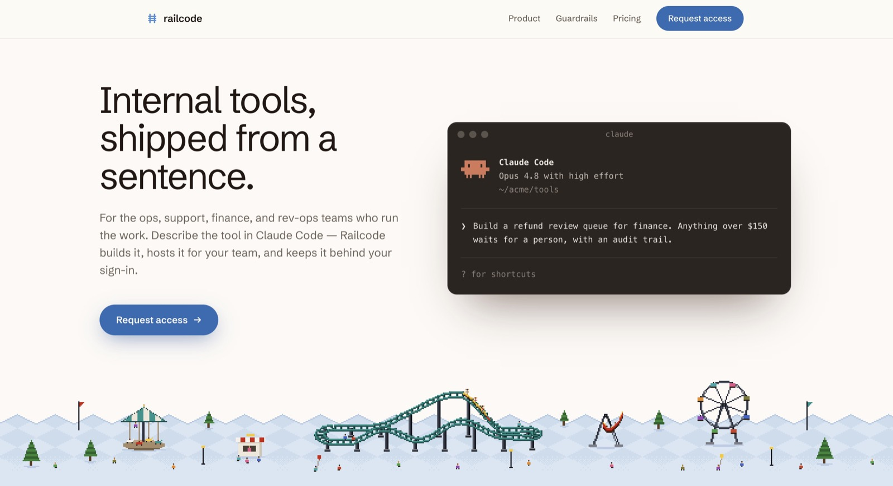
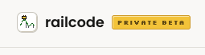
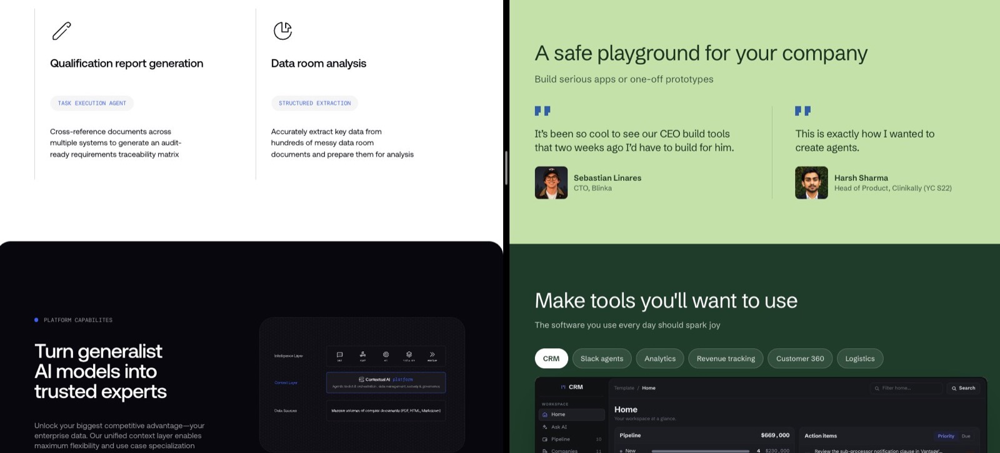
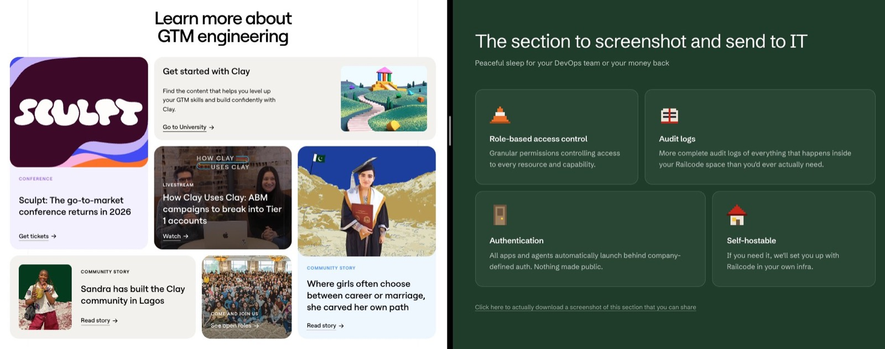
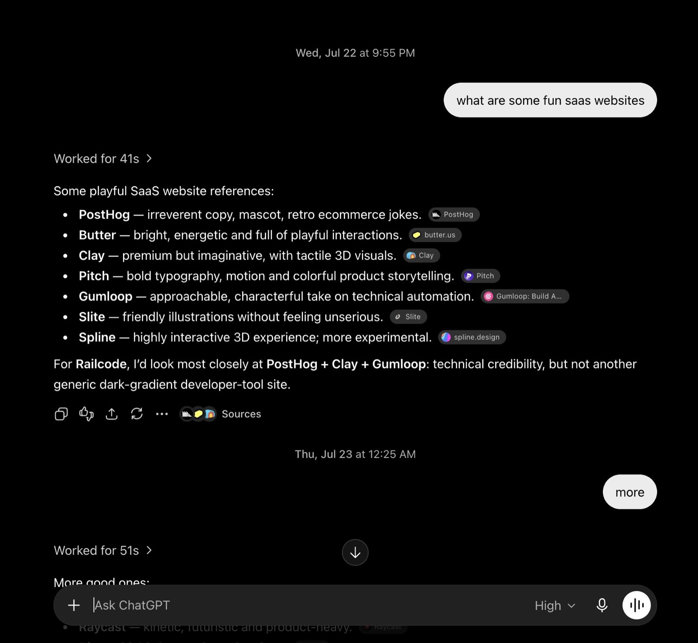
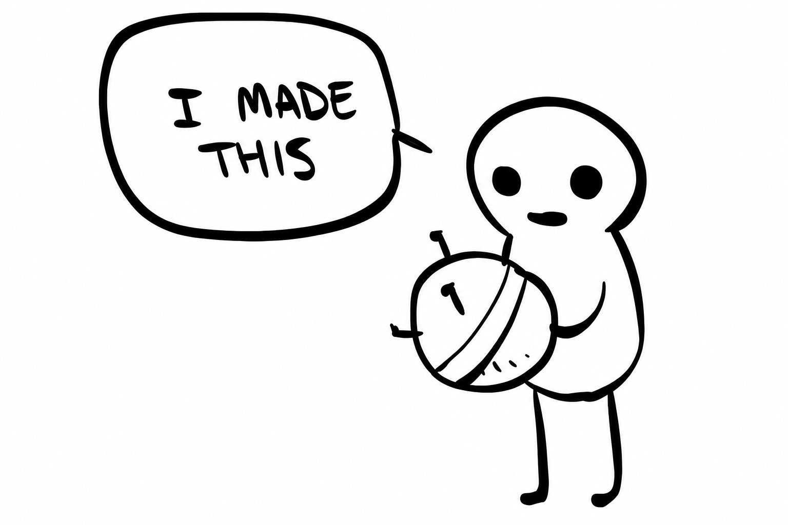

1 你以为的 vibe coding
一说 vibe coding 出来的网站，脑子里大概是这种东西：

作者做的假站，用来举例。他说很多真站其实长这样。
可你正在看的这个站，也是 vibe coding 出来的，长得完全不是一回事：
Railcode 官网。原文视频。
作者自己也觉得，说它「像设计师做的」有点过。可别人真这么跟他说了。很多人过来问这站怎么做的、跟谁一起做的。
问的人太多，他决定把 Railcode 网站的创作过程讲一遍。不是觉得自己有多厉害，更不是说设计师可以不要——恰恰相反。网上大多在骂 LLM 设计 slop，他自己的感觉却是：有了编码代理之后，对设计更兴奋了。以前无从下手，现在能把脑子里的画面做出来。
这篇想说明一件事：编码代理可以做出你自己看得顺眼的设计。你应该敢上手。

写这篇文章时，他把每个原型和生成它的提示词收进一张索引，把过程钉在事实上。
2 过程一张图
原文是按时间讲的。下面这张图把死胡同也画进去：霓虹丑稿、迷你游戏、单轨贴模板、孤立条带，他都走过。
3 过山车从哪来
Railcode 这个名字来自 “code on rails”：应用和代理本身就是代码，他们管基础设施和护栏（rails），好在安全环境里尽快部署。见 railcode.dev。
做这个站的前一周，他发现自己在 Railcode 里给自己做东西很开心（他是活跃用户）。问客户，客户也说好玩。
Rails + fun = rollercoaster。于是决定：网站上要有过山车。
他不是设计师，从零想概念很难，只能靠例子和灵感。两招：
- 网上逛自己喜欢的设计
- 让代理把同一件东西按不同风格狂出一堆
目的是打开「还有什么可能」。多数时候从好几处抓想法、拼起来、没完没了地改，多数时候是死胡同。
第一批过山车稿是这样的：
上排两张 ASCII 稿，灵感来自朋友的站 context.store。其余交给 Fable 自己想，当灵感种子。
对他有用的两件事
- 强度分层。让代理把一个概念做成从淡到猛的光谱。如果光谱上没有一张喜欢的，多半整条光谱选错了。也能感觉自己更想极简，还是还能再疯一点。
- 放开做（go wild）。试一个概念至少 4 版，有时 10 版。一半给方向，剩下一半让代理放开。这些稿大多很糟，但能迸出新点子。
那张又疯又丑的霓虹稿，就是「放开做」那一组。他不会用，可它把他从 ASCII 推到更野的方向。
4 过山车大亨

童年玩的 Rollercoaster Tycoon。目标是把乐园盖到尽可能好看。
看着 Claude 那张霓虹怪物，他想起这游戏，于是决定网站向它致敬。
第一步，居然让 Fable 先做了个迷你版：
可玩的 HTML 组件，并行做了两份，其中一份透明底。
好玩。有那么一瞬间他觉得网站里真该塞个游戏。玩了一会儿，觉得过头了。
回到原点：只要一条自己真正喜欢的过山车。试够了，终于有了：
留下的那条轨。
当时他以为完事了。把过山车往模板上一贴，差点就停在那儿。
过山车贴在模板中间。好看，可它在这儿干什么？
很明显：需要一整座园。
5 脱轨：需要一座园
决定要乐园之后，他直觉它该放在 hero 底部。说不清从哪几个站看来的。
于是做出这条：
约 200px 高的设施条带，风格跟过山车对齐。
方向能看出来了。可往整站上一放，还是难看：

这时他已经平行在做「编码代理」那一块的组件。
再改，变成这样：

资产锚在前面那条过山车上，动画逐个手挑。条带不再独立，而是变成下一块的颜色过渡。最后这一步他也说不清从哪看来的。
6 分叉再分叉
落到上一版时他很高兴，马上给朋友看。可还是觉得哪里不对，于是开始分叉。
做网站时，他会把设计先做成一份 HTML，差不多能上了，再拆成 React 组件，好让代理并行改。
好处是：复制一版、改一两处、并排看，非常快。

分叉对照。他从不删这些分叉。
另一件事是做他所谓的 playground：颜色和变量能实时拧，不必每改一次都跟代理说一句话。
这次先把草地从蓝改成绿（草本来就是绿的）。可那一版绿不对。于是让 Claude 做了块调色场：强调色、字色、草地、背景都能试。草地的调子是在那儿拧出来的。
（他几乎想做个开源小工具专门干这个。有空再说。）
草地搞定，开始抠细节。
还没走上过山车这条路之前，整个过程的第一枪是让 Fable 出「开发工具好玩网站」的 mockup。大多是 slop。后来想 CTA 怎么更好看，想起里面有过一个能用的：

早期烂稿里的一颗扣子。这就是为什么一开头要看很多设计，哪怕当时觉得糟。
白底也不好玩。改成天蓝，再加云：
白改蓝，整站味道差一截。
后面都顺着 hero 走。Railcode 产品的强调色现在是蓝，可网站上的绿来得太自然，他没硬拧回去。于是有了浅绿、深绿，最后是泥土色页脚。他说产品设计可能因此还得回头改。
风格一旦钉住，新图标和新资产就有参照。先把 vibe 做对，后面才有方向。
永远有细节可抠。最后一个例子是导航：静态一块色待在那儿不像一家人。改成跟着当前区块的背景变色。他觉得差很多。
白、浅蓝、浅绿、深绿的静态版都试过，最后发现：全要才对。
7 灵感从哪抄
前面说过：不是设计师，必须从现成作品里找灵感。对编码代理来说，清楚的例子也是最好的方向盘。
有时会跟看过的东西很像。浅色区块转深色是常见手法，他常拿 Contextual AI 当参照：

左 contextual.ai，右 Railcode。
有时关系更含糊。下面这块其实灵感来自 Clay：

左 clay.com，右 Railcode。
他还不停地看别的站。就算没用上具体某一块，也会留下感觉。Railcode 的站一点不像 Sentry，可他反复看 Sentry，想体会插画怎么跟内容长在一起。

过了午夜半小时：「more」。
8 他自己的清单
还能再写，但已经够长。若只留他觉得最要紧的几条：
- 设计只用 Anthropic 的模型。OpenAI 的模型连明确指示都吃力。Fable 是最好的。
- 满意之前，全部放在一份 HTML 里。文案那些事，等设计过关再做。
- 看很多网站。常回看自己喜欢的，也不断找新的。特别喜欢某一块，就拿它当底座往上长。
- 一开头让 Claude 狂出很多不同网站，99% 扔掉。偶尔从里面抠一个组件，或得到一个新想法。
- 常让编码代理对几版「放开做」，也常把一颗种子做成从极简到出格的光谱。
- 过程要留痕：不断分叉、改一点、跟原版比。可能继续分叉，也可能退回。分叉从不删。
- 做 playground，颜色、字体、位置能实时拧，不必每一步都跟代理对话。
- 改，再改，再改。大多数迭代是死胡同。
最重要的一条：过程要好玩。

POV: me when Fable did heavy lifting
9 出处
- Yakko Majuri, How our vibe coded website looks like a designer made it，railcode.dev，2026-08-10。本页是译文，图和视频来自原文。
- 产品站：https://railcode.dev/。Fable 是文中的编码代理。
- 灵感来源（原文点名）：context.store（ASCII 过山车）、Rollercoaster Tycoon、contextual.ai（浅转深）、clay.com（区块结构）、sentry.io（插画和内容怎么长在一起）。
- 过程图、三种改法图按原文时间线另画，不是原文插图。